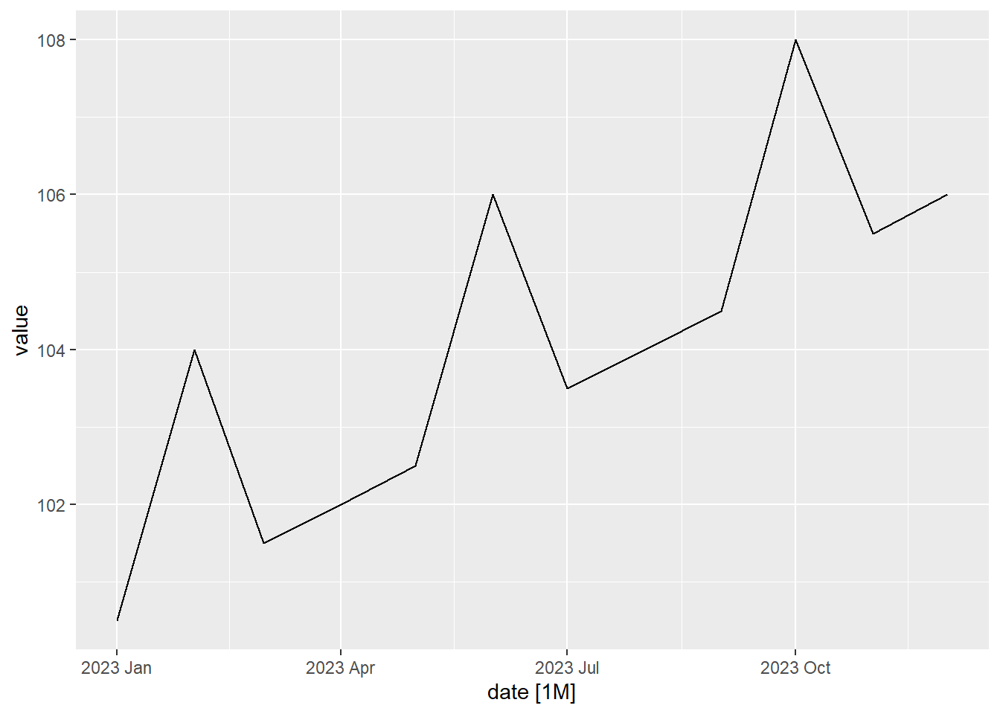
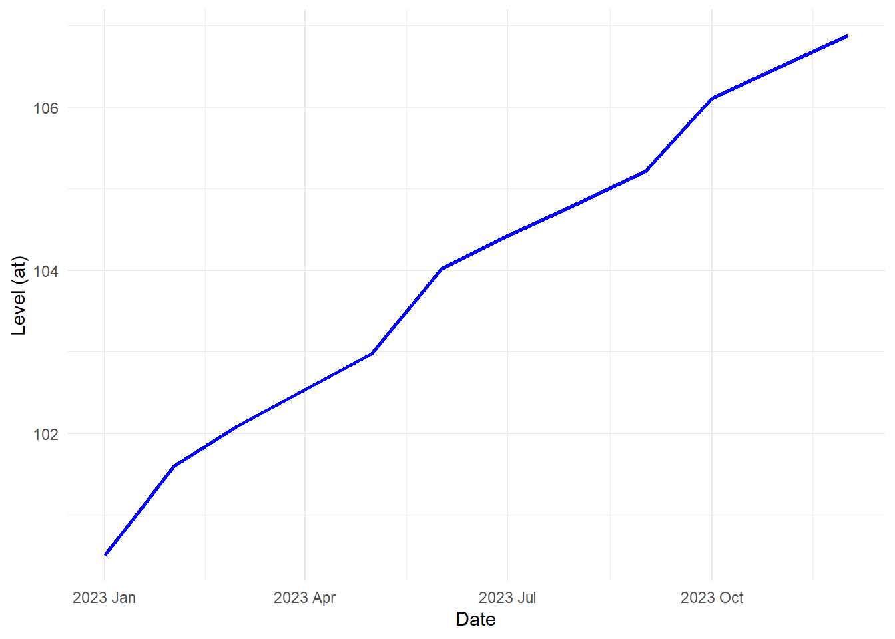
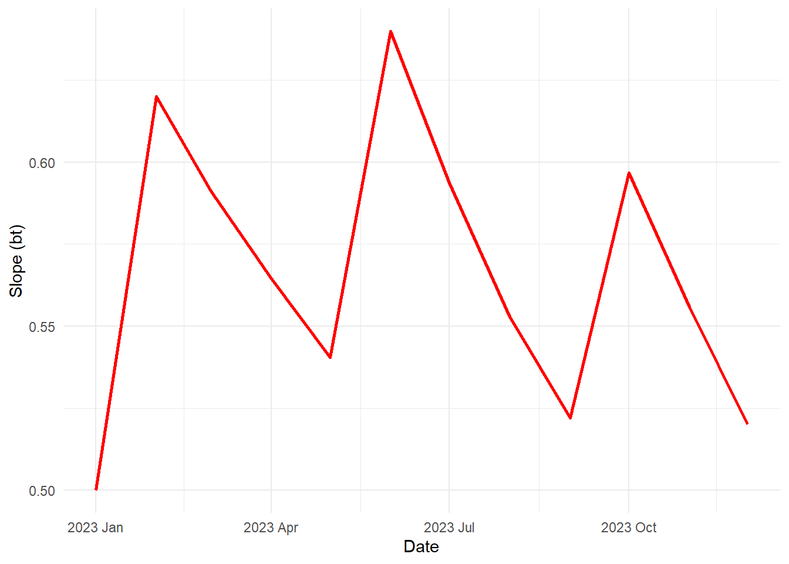
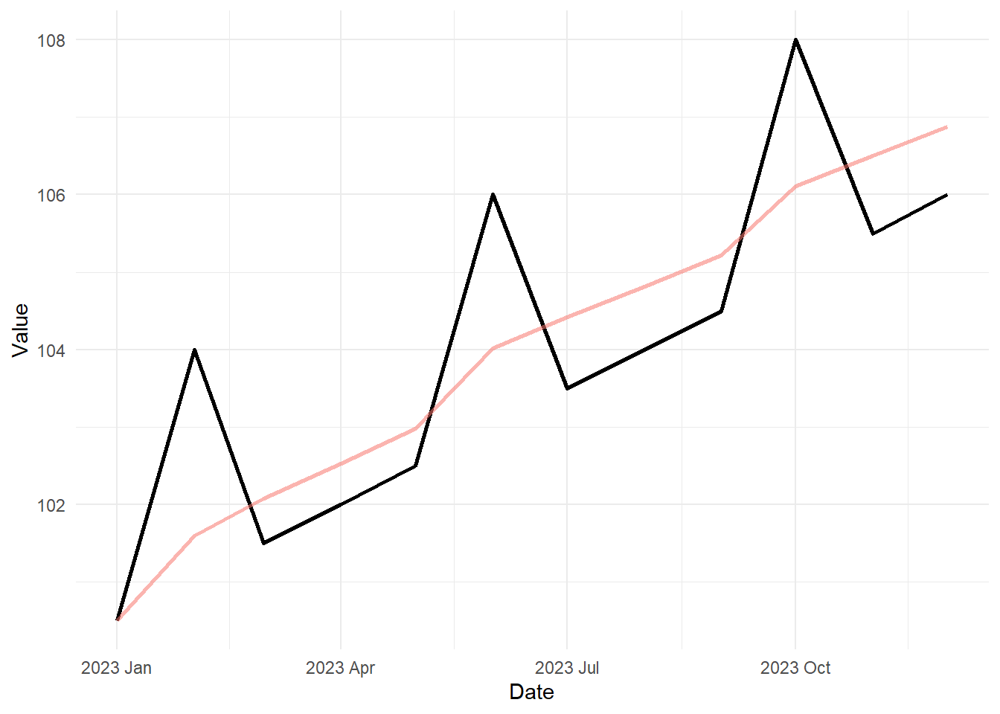
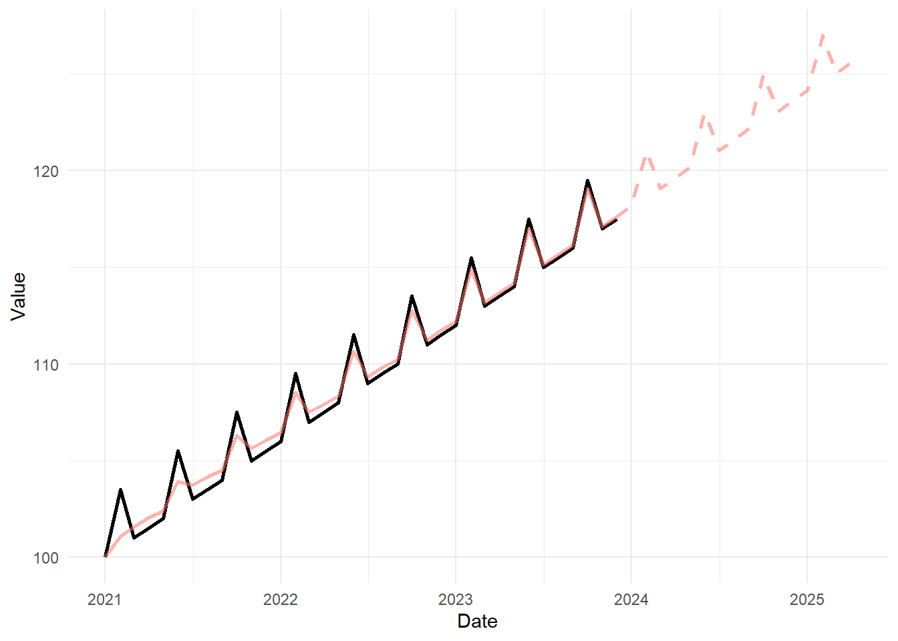

holt_winters_additive_forecast <- function(data, alpha = 0.2, beta = 0.2, gamma = 0.2, p = 12, a1 = NULL, b1 = NULL, s1 = NULL) {
# Assuming 'data' is a tsibble with a column 'value'
data <- data %>%
mutate(month = month(date))
at <- numeric(nrow(data))
bt <- numeric(nrow(data))
st <- numeric(nrow(data))
at[1] <- ifelse(!is.null(a1), a1, data$value[1])
bt[1] <- ifelse(!is.null(b1), b1, (1 / p) * mean( data$value[(p+1):(2*p)] - data$value[1:p] ))
st[1:p] <- ifelse(!is.null(s1), s1, 0)
for (t in 2:p) {
at[t] <- alpha * (data$value[t] - st[t - 0 * p ]) + (1 - alpha) * (at[t - 1] + bt[t - 1])
bt[t] <- beta * (at[t] - at[t - 1]) + (1 - beta) * bt[t - 1]
}
for (t in (p + 1):nrow(data)) {
at[t] <- alpha * (data$value[t] - st[t - p]) + (1 - alpha) * (at[t - 1] + bt[t - 1])
bt[t] <- beta * (at[t] - at[t - 1]) + (1 - beta) * bt[t - 1]
st[t] <- gamma * (data$value[t] - at[t]) + (1 - gamma) * st[t - p]
}
data <- data %>%
mutate(estimated_level = at, estimated_slope = bt, estimated_seasonal = st)
data %>% return()
}Holt-Winters Method (Additive Model)
Chapter 3: Lesson 3
Learning Outcomes
Implement the Holt-Winter method to forecast time series
- Justijy the need for the Holt-Winters method of exponential smoothing
- Remember how to obtain initial parameters for the H-W algorithm
- Explain the H-W method equatons and parameters for additive decomposition models
- Explain the H-W forecasting equation for additive decomposition models .Eq 3.22
- Explain the H-W method equatons and parameters for multiplicative decomposition models
- State the H-W forecasting equation for multiplicative decomposition models .Eq 3.23
- Use HoltWinters() to forecast additive model time series
- Use HoltWinters() to forecast multiplicative model time series
- Interpret the coeficient estimates a_n, b_n, s_n of H-W smoothing algorithm
- Interpret the smoothing parameter estimates alpha, beta, gamma of H-W smoothing algorithm
- Plot the H-W decomposition of a TS (see Fig 3.10)
- Plot the H-W fitted values versus the original time series (see Fig 3.11)
- Plot H-W predictions along time series realizations (see Fig 3.13)
Introduction to the Holt-Winters Method (Additive Model)
seasonal component (that may change from time to time,) and the
The Holt-Winters method provides a way to model a time series in which we consider the time series in layers. first, there is the level (the smoothed \(x_t\) values from the time series) at time \(t\). We will denote the level by \(a_t\). The level can change from time to time. We introduce a value \(b_n\), which we call the slope. This is the change in the level of the series from one time period to another. (As the book points out, R and many textbooks call the slope the trend.) Finally, we include a seasonal estimate, \(s_t\), which indicates how much the time series rises or falls above the level and trend values at time \(t\).
To visualize these terms, it can be helpful to consider the forecasting model. Suppose we have computed that Holt-Winters estimate of a time series with \(n\) observations. In other words, we have just fit a curve to the entire time series. We will use a very simple time series for this illustration.
holt_winters_additive_plot <- function(data) {
# Plot 1: Just 'data$estimated_level'
plot_at <- ggplot(data, aes(x = date, y = estimated_level)) +
geom_line(color = "blue", size = 1) +
labs(
x = "Date",
y = "Level (at)",
title = NULL
) +
theme_minimal()
# Plot 2: Just 'data$estimated_slope'
plot_bt <- ggplot(data, aes(x = date, y = estimated_slope)) +
geom_line(color = "red", size = 1) +
labs(
x = "Date",
y = "Slope (bt)",
title = NULL
) +
theme_minimal()
# Plot 3: Just 'data$estimated_seasonal'
plot_st <- ggplot(data, aes(x = date, y = estimated_seasonal)) +
geom_line(color = "green", size = 1) +
labs(
x = "Date",
y = "Seasonal (st)",
title = NULL
) +
theme_minimal()
# Plot 4: Original trendline with 'data$estimated_level'
plot_combined <- ggplot(data, aes(x = date)) +
geom_line(aes(y = value), color = "black", size = 1) +
geom_line(aes(y = estimated_level, color = "Combined", alpha=0.5), size = 1) +
labs(
x = "Date",
y = "Value",
title = NULL,
color = "Components"
) +
theme_minimal() +
theme(legend.position = "none")
return(list(plot_at, plot_bt, plot_st, plot_combined))
}# holt_winters_additive_forecast_plot <- function(data, k = 8) {
#
#
# # Plot 4: Original trendline with 'data$estimated_level'
# plot_combined <- ggplot(data, aes(x = date)) +
# geom_line(aes(y = value), color = "black", size = 1) +
# geom_line(aes(y = estimated_level, color = "Combined", alpha=0.5), size = 1) +
# labs(
# x = "Date",
# y = "Value",
# title = NULL,
# color = "Components"
# ) +
# theme_minimal() +
# theme(legend.position = "none")
#
# return(plot_combined)
# }I THINK THIS IS THE WRONG ONE…
a <- function(t) { 100 }
b <- function(t) { 1/2 }
s <- function(t) { (t %% 4 == 2) * 3 }
x <- function(t) { a(t) + t * b(t) + s(t) }
n_months <- 12
start_date <- my(paste(1, floor(year(now())-n_months/12)))
date_seq <- seq(start_date,
start_date + months(n_months - 1),
by = "1 months")
date_seq [1] "2023-01-01" "2023-02-01" "2023-03-01" "2023-04-01" "2023-05-01"
[6] "2023-06-01" "2023-07-01" "2023-08-01" "2023-09-01" "2023-10-01"
[11] "2023-11-01" "2023-12-01"temp_ts <- data.frame(date = yearmonth(date_seq), value = x(1:n_months)) |>
as_tsibble(index = date)
temp_ts |>
autoplot(.vars = value)
temp1 <- holt_winters_additive_forecast(temp_ts, alpha = 0.2, beta = 0.2, gamma = 0.2, p = 4, b1=NULL, s1 = 0)
temp1 %>% as_tibble()# A tibble: 12 × 6
date value month estimated_level estimated_slope estimated_seasonal
<mth> <dbl> <dbl> <dbl> <dbl> <dbl>
1 2023 Jan 100. 1 100. 0.5 0
2 2023 Feb 104 2 102. 0.620 0
3 2023 Mar 102. 3 102. 0.591 0
4 2023 Apr 102 4 103. 0.565 0
5 2023 May 102. 5 103. 0.541 -0.0957
6 2023 Jun 106 6 104. 0.640 0.397
7 2023 Jul 104. 7 104. 0.594 -0.185
8 2023 Aug 104 8 105. 0.553 -0.163
9 2023 Sep 104. 9 105. 0.522 -0.219
10 2023 Oct 108 10 106. 0.597 0.696
11 2023 Nov 106. 11 107. 0.556 -0.348
12 2023 Dec 106 12 107. 0.520 -0.306 # holt_winters_additive_forecast_plot(temp1)
holt_winters_additive_plot(temp1)Warning: Using `size` aesthetic for lines was deprecated in ggplot2 3.4.0.
ℹ Please use `linewidth` instead.[[1]]
[[2]]
[[3]]
[[4]]
This is the right one
a <- function(t) { 100 }
b <- function(t) { 1/2 }
s <- function(t) { (t %% 4 == 2) * 3 }
x <- function(t) { a(t) + (t-1) * b(t) + s(t) }
n_months <- 36
max_k <- 16
start_date <- my(paste(1, floor(year(now())-n_months/12)))
date_seq <- seq(start_date,
start_date + months(n_months - 1),
by = "1 months")
date_seq [1] "2021-01-01" "2021-02-01" "2021-03-01" "2021-04-01" "2021-05-01"
[6] "2021-06-01" "2021-07-01" "2021-08-01" "2021-09-01" "2021-10-01"
[11] "2021-11-01" "2021-12-01" "2022-01-01" "2022-02-01" "2022-03-01"
[16] "2022-04-01" "2022-05-01" "2022-06-01" "2022-07-01" "2022-08-01"
[21] "2022-09-01" "2022-10-01" "2022-11-01" "2022-12-01" "2023-01-01"
[26] "2023-02-01" "2023-03-01" "2023-04-01" "2023-05-01" "2023-06-01"
[31] "2023-07-01" "2023-08-01" "2023-09-01" "2023-10-01" "2023-11-01"
[36] "2023-12-01"temp_ts <- data.frame(date = yearmonth(date_seq), value = x(1:n_months)) |>
as_tsibble(index = date)
temp_ts |>
autoplot(.vars = value)
temp1 <- holt_winters_additive_forecast(temp_ts, alpha = 0.2, beta = 0.2, gamma = 0.2, p = 4, s1 = 0)
start_date <- ym(max(temp1$date)) + months(1)
date_seq <- seq(start_date,
start_date + months(max_k - 1),
by = "1 months")
date_seq [1] "2024-01-01" "2024-02-01" "2024-03-01" "2024-04-01" "2024-05-01"
[6] "2024-06-01" "2024-07-01" "2024-08-01" "2024-09-01" "2024-10-01"
[11] "2024-11-01" "2024-12-01" "2025-01-01" "2025-02-01" "2025-03-01"
[16] "2025-04-01"tail1 <- temp1 %>% mutate(n = row_number()) %>% tail(1)
an <- tail1$estimated_level[1]
bn <- tail1$estimated_slope[1]
n <- tail1$n[1]
temp2 <- temp1 %>%
bind_rows(data.frame(date = date_seq, value = NA, month = NA, estimated_level = NA, estimated_slope = NA, estimated_seasonal = NA)) %>%
mutate(forecast = as.numeric(NA))
temp2$forecast[n] <- temp2$estimated_level[n] + temp2$estimated_seasonal[n]
for (k in (n+1):(n+max_k)) {
temp2$estimated_seasonal[k] <- temp2$estimated_seasonal[k - 4] ######### MAGIC NUMBER: 4 periods per cycle
temp2$forecast[k] <- an + (k - n) * bn + temp2$estimated_seasonal[k]
}
ggplot(temp2, aes(x = date)) +
geom_line(aes(y = value), color = "black", size = 1) +
geom_line(aes(y = estimated_level + estimated_seasonal, color = "Combined", alpha=0.5), size = 1) +
geom_line(aes(y = forecast, color = "Combined", alpha=0.5), linetype = "dashed", size = 1) +
labs(
x = "Date",
y = "Value",
title = NULL,
color = "Components"
) +
theme_minimal() +
theme(legend.position = "none")
Now, suppose we want to use this estimated curve to forecast future values of the time series.
Forecast (Additive)
df <- read.csv("https://byuistats.github.io/timeseries/data/baltimore_crime.csv",
header=TRUE,
stringsAsFactors=FALSE)
summary_df <- df %>%
group_by(CrimeDate) %>%
summarise(
total_incidents = sum(Total.Incidents)
)
crime_data <- summary_df %>%
mutate(CrimeDate = as.Date(CrimeDate, format = "%m/%d/%Y")) %>%
arrange(CrimeDate)
crime_tsibble <- as_tsibble(crime_data, index = CrimeDate)
crime_tsibble # Uncomment to see table# A tsibble: 2,143 x 2 [1D]
CrimeDate total_incidents
<date> <int>
1 2011-01-01 185
2 2011-01-02 102
3 2011-01-03 106
4 2011-01-04 113
5 2011-01-05 131
6 2011-01-06 107
7 2011-01-07 150
8 2011-01-08 106
9 2011-01-09 98
10 2011-01-10 115
# ℹ 2,133 more rowsAdditive seasonality Model
- Alpha = 0.2
- Beta = 0.2
- Gamma = 0.2
# holt_winters_additive_forecast_plot(crime_tsibble, alpha = 0.2, beta = 0.2, gamma = .2)\[\begin{align*} a_t &= \alpha \left( x_t - s_{t-p} \right) + (1-\alpha) \left( a_{t-1} + b_{t-1} \right) \\ b_t &= \beta \left( a_t - a_{t-1} \right) + (1-\beta) b_{t-1} \\ s_t &= \gamma \left( x_t - a_t \right) + (1-\gamma) s_{t-p} \end{align*}\]
Small Group Activity: Holt-Winters Model for BYU-Idaho Enrollment Data (20 min)
In Chapter 2, Lesson 3, we explored the BYU-Idaho Enrollment data. We will apply the Holt-Winters model to these data.
# read in the data from a csv and make the tsibble
# Method 1:
enrollment_df <- rio::import("https://byuistats.github.io/timeseries/data/byui_enrollment.csv")
start_date <- lubridate::ymd("2019-05-01")
date_seq <- seq(start_date,
start_date + months(nrow(enrollment_df)-1) * 4,
by = "4 months")
enrollment_ts <- tibble(
dates = tsibble::yearmonth(date_seq),
semester = pull(enrollment_df, semester),
enrollment = pull(enrollment_df, enrollment)
) |>
dplyr::select(semester, dates, enrollment) |>
as_tsibble(index = dates)
# Method 2:
enrollment_ts <- rio::import("https://byuistats.github.io/timeseries/data/byui_enrollment.csv") |>
mutate(
dates = yearmonth(ym(paste(year, term * 4 - 3)))
) |>
dplyr::select(semester, dates, enrollment) |>
as_tsibble(index = dates)
# Compute and plot the decomposition
enrollment_decompose <- enrollment_ts |>
model(feasts::classical_decomposition(enrollment,
type = "add")) |>
components()
autoplot(enrollment_decompose)
–>
Small Group Activity: Decomposition of Baltimore Crime Data (20 min)
Background
The City of Baltimore publishes crime data, which can be accessed through a query. This dataset is sourced from the City of Baltimore Open Data and is updated monthly. You can explore the data on data.world.
Use the following code to import the data:
Show the code
crime_df <- rio::import("https://byuistats.github.io/timeseries/data/baltimore_crime.csv")
#crime_df <- rio::import("data/baltimore_crime.parquet")The data set consists of 285807 rows and 12 columns. There are a few key variables:
- Date and Time: Records the date and time of each incident.
- Location: Detailed coordinates of each incident.
- Crime Type: Description of the type of crime.
When exploring a new time series, it is crucial to carefully examine the data. Here are a few rows of the original data set.
| CrimeDate | CrimeTime | CrimeCode | Location | Description | Inside.Outside | Weapon | Post | District | Neighborhood | Location.1 | Total.Incidents |
|---|---|---|---|---|---|---|---|---|---|---|---|
| 11/12/2016 | 02:35:00 | 3B | 300 SAINT PAUL PL | ROBBERY - STREET | O | 111 | CENTRAL | Downtown | (39.2924100000, -76.6140800000) | 1 | |
| 11/12/2016 | 02:56:00 | 3CF | 800 S BROADWAY | ROBBERY - COMMERCIAL | I | FIREARM | 213 | SOUTHEASTERN | Fells Point | (39.2824200000, -76.5928800000) | 1 |
| 11/12/2016 | 03:00:00 | 6D | 1500 PENTWOOD RD | LARCENY FROM AUTO | O | 413 | NORTHEASTERN | Stonewood-Pentwood-Winston | (39.3480500000, -76.5883400000) | 1 | |
| 11/12/2016 | 03:00:00 | 6D | 6600 MILTON LN | LARCENY FROM AUTO | O | 424 | NORTHEASTERN | Westfield | (39.3626300000, -76.5516100000) | 1 | |
| 11/12/2016 | 03:00:00 | 6E | 300 W BALTIMORE ST | LARCENY | O | 111 | CENTRAL | Downtown | (39.2893800000, -76.6197100000) | 1 | |
| 11/12/2016 | 03:00:00 | 4E | 6900 MCCLEAN BLVD | COMMON ASSAULT | I | HANDS | 423 | NORTHEASTERN | Hamilton Hills | (39.3707000000, -76.5670900000) | 1 |
| ⋮ | ⋮ | ⋮ | ⋮ | ⋮ | ⋮ | ⋮ | ⋮ | ⋮ | ⋮ | ⋮ | ⋮ |
| 01/01/2011 | 23:38:00 | 4D | 800 N FREMONT AV | AGG. ASSAULT | I | HANDS | 123 | WESTERN | Upton | (39.2981200000, -76.6339100000) | 1 |
Show the code
# Data Summary and Aggregation
# Group by dates column and summarize from Total.Incidents column
daily_summary_df <- crime_df |>
rename(dates = CrimeDate) |>
group_by(dates) |>
summarise(incidents = sum(Total.Incidents))
# Data Transformation and Formatting
# Select relevant columns, format dates, and arrange the data
crime_data <- daily_summary_df |>
mutate(dates = mdy(dates)) |>
mutate(
month = month(dates),
day = day(dates),
year = year(dates)
) |>
dplyr::select(dates, month, day, year, incidents) |>
arrange(dates)
# Convert formatted data to a tsibble with dates as the index
crime_tsibble <- as_tsibble(crime_data, index = dates)Here are a few rows of the summarized data.
| dates | incidents |
|---|---|
| 01/01/2011 | 185 |
| 01/01/2012 | 176 |
| 01/01/2013 | 157 |
| 01/01/2014 | 139 |
| 01/01/2015 | 157 |
| 01/01/2016 | 148 |
| ⋮ | ⋮ |
| 12/31/2013 | 128 |
| 12/31/2014 | 108 |
| 12/31/2015 | 97 |
The following table summarizes the number of days in each month for which crime data were reported.
Show the code
crime_data |>
mutate(month_char = format(as.Date(dates), '%b') ) |>
group_by(month, month_char, year) |>
summarise(n = n(), .groups = "keep") |>
group_by() |>
arrange(year, month) |>
dplyr::select(-month) |>
rename(Year = year) |>
pivot_wider(names_from = month_char, values_from = n) |>
display_table()| Year | Jan | Feb | Mar | Apr | May | Jun | Jul | Aug | Sep | Oct | Nov | Dec |
|---|---|---|---|---|---|---|---|---|---|---|---|---|
| 2011 | 31 | 28 | 31 | 30 | 31 | 30 | 31 | 31 | 30 | 31 | 30 | 31 |
| 2012 | 31 | 29 | 31 | 30 | 31 | 30 | 31 | 31 | 30 | 31 | 30 | 31 |
| 2013 | 31 | 28 | 31 | 30 | 31 | 30 | 31 | 31 | 30 | 31 | 30 | 31 |
| 2014 | 31 | 28 | 31 | 30 | 31 | 30 | 31 | 31 | 30 | 31 | 30 | 31 |
| 2015 | 31 | 28 | 31 | 30 | 31 | 30 | 31 | 31 | 30 | 31 | 30 | 31 |
| 2016 | 31 | 29 | 31 | 30 | 31 | 30 | 31 | 31 | 30 | 31 | 12 | NA |
Here is a time plot of the number of crimes reported in Baltimore daily.
Show the code
# Time series plot of total incidents over time
crime_plot <- autoplot(crime_tsibble, .vars = incidents) +
labs(
x = "Time",
y = "Total Crime Incidents",
title = "Total Crime Incidents Over Time"
) +
theme(plot.title = element_text(hjust = 0.5))
# Display the plot
crime_plot
Monthly Summary
We could analyze the data at the daily level, but for simplicity we will model the monthly totals.
Show the code
crime_monthly_ts <- crime_tsibble |>
index_by(month_year = floor_date(as_date(dates), "month")) |>
summarise(value = sum(incidents))
# Plot mean annual total incidents using autoplot
autoplot(crime_monthly_ts, .vars = value) +
labs(
x = "Year",
y = "Total Monthly Crime Incidents",
) +
theme(plot.title = element_text(hjust = 0.5))
There is incomplete data for 2016, as data were not provided after 11/12/2016. We will only consider data through January 2016. We will omit any data after October 2016.
Show the code
crime_monthly_ts <- crime_monthly_ts |>
filter(month_year < mdy("10/31/2016"))Homework Preview (5 min)
- Review upcoming homework assignment
- Clarify questions